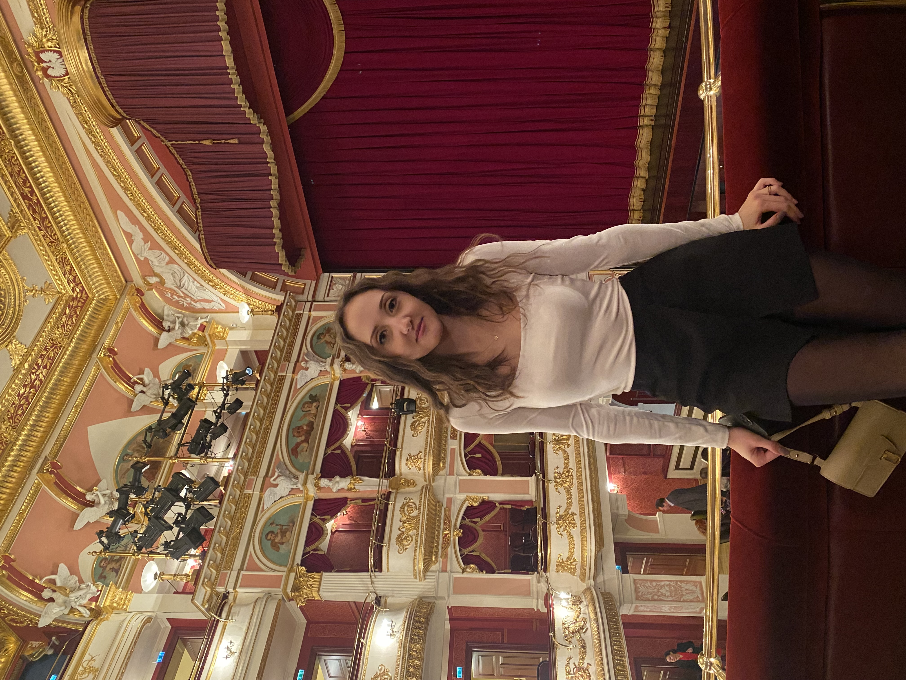
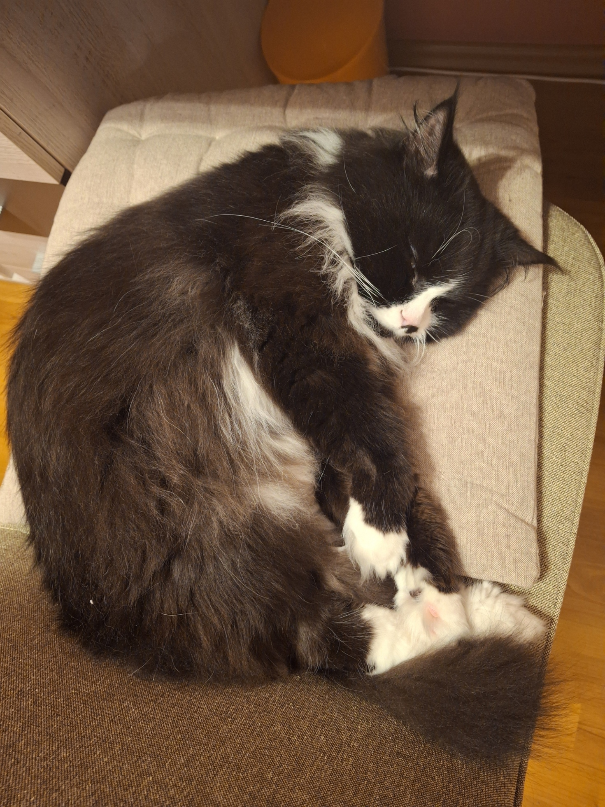

<!DOCTYPE html>
<html lang="pl">
    <head>
        <title>Lekarz Zuzanna Zalewska</title>
        <style>
            body {
                font-family: sans-serif;
                background-color: #e1e5e8;
                color: #202122;
                margin: 0;
                padding: 0;
                line-height: 1.4;
            }
            h1 {
                background-color:#e1e5e8;
                color: #030303;
            }
            h2 {color:#030303;
                font-size: 1.35rem;
            }
            p {
                font-size: 1.1rem;
                line-height: 1.3;
            }
            
            .wiki-infobox {
                float: right;
                width: 300px;
                border-collapse: collapse;
                border: 1px solid #a2a9b1;
                margin: 0 0 15px 15px;
                font-size: 0.88rem;
                background-color: #ffffff;
            }

            .wiki-infobox .main-title {
                background-color: #5b9bd5;
                color: #000000;
                font-weight: bold;
                font-size: 1.1rem;
                padding: 8px;
                text-align: center;
            }

            .wiki-infobox .section-title {
                background-color: #5b9bd5;
                color: #000000;
                font-weight: bold;
                padding: 5px;
                text-align: center;
            }

            .wiki-infobox .photo-cell {
                text-align: center;
                padding: 10px;
                background-color: #ffffff;
                border-bottom: 1px solid #a2a9b1;
            }

            .wiki-infobox .photo-cell img {
                width: 100%;
                max-width: 260px;
                height: auto;
            }

            .photo-caption {
                font-size: 0.8rem;
                color: #333333;
                margin-top: 5px;
            }

            .wiki-infobox td.label {
                background-color: #e8eef7;
                color: #202122;
                padding: 6px 8px;
                width: 40%;
                vertical-align: top;
                border-right: 1px solid #a2a9b1; 
                border-bottom: 1px solid #e0e0e0;
            }

            .wiki-infobox td.data {
                background-color: #ffffff;
                padding: 6px 8px;
                width: 60%;
                vertical-align: top;
                border-bottom: 1px solid #e0e0e0;
            }

            .wiki-header {
                background-color: #ffffff;
                border-bottom: 1px solid #a2a9b1;
                padding: 10px 30px;
                font-size: 0.9rem;
                color: #54595d;
            }

            .wiki-wrapper {
                max-width: 1200px;
                margin: 20px auto;
                padding: 0 15px;
                display: flex;
                gap: 25px;
                align-items: flex-start; 
            }

            .wiki-sidebar {
                width: 180px;
                flex-shrink: 0;
                font-size: 0.85rem;
                position: sticky;     
                top: 20px;            
            }

            .wiki-sidebar h3 {
                font-size: 0.85rem;
                color: #000508;
                border-bottom: 1px solid #a2a9b1;
                padding-bottom: 3px;
                margin-bottom: 10px;
            }

            .wiki-sidebar ul {
                list-style-type: none;
                padding-left: 0;
            }

            .wiki-sidebar li {
                margin-bottom: 8px;
            }

            .wiki-sidebar a {
                color: rgb(0, 1, 4); 
                text-decoration: none;
                font-size: 1.05rem;
            }

            .wiki-sidebar a:hover {
                text-decoration: underline;
            }

            .wiki-content {
                flex: 1;
                background-color: #ffffff;
                border: 1px solid #5d636a;
                padding: 25px 30px;
                border-radius: 2px;
            }
                    </style>
    </head>
</html>

<body>

    <div class="wiki-header">
        <strong>Wolna Encyklopedia Lekarska</strong>
    </div>

    <div class="wiki-wrapper">

        <div class="wiki-sidebar">
            <h3>Spis treści</h3>
            <ul>
                <li><a href="#biografia">1. Informacje</a></li>
                <li><a href="#wyksztalcenie">2. Wykształcenie</a></li>
                <li><a href="#hobby">3. Hobby</a></li>
                <li><a href="#przyjaciele">4. Przyjaciele</a></li>
                <li><a href="#galeria">5. Galeria</a></li>
            </ul>
        </div>

        <div class="wiki-content">

            <h1 id="biografia"><center>Lekarz <br>Zuzanna Zalewska</center></h1>
            
            <table class="wiki-infobox">
            <tr>
                <th colspan="2" class="main-title">Zuzanna Zalewska</th>
            </tr>

            <tr>
                <td colspan="2" class="photo-cell">
                    
                    <div class="photo-caption">Lek. Zuzanna Zalewska (2026)</div>
                </td>
            </tr>

            <tr>
                <td class="label">Data i miejsce urodzenia</td>
                <td class="data">23 czerwca 2001<br>Zduńska Wola</td>
            </tr>

            <tr>
                <td class="label">Alma Mater</td>
                <td class="data">Uniwersytet Medyczny we Wrocławiu</td>
            </tr>
            <tr>
                <td class="label">Data rozpoczęcia studiów</td>
                <td class="data">1 października 2020</td>
            </tr>

            <tr>
                <th colspan="2" class="section-title">Rodzina</th>
            </tr>

            <tr>
                <td class="label">Mama</td>
                <td class="data">Małgorzata Zalewska-Łakoma</td>
            </tr>
            <tr>
                <td class="label">Tata</td>
                <td class="data">Marek Zalewski</td>
            </tr>
            <tr>
                <td class="label">Ojczym</td>
                <td class="data">Andrzej Łakomy</td>
            </tr>
            <tr>
                <td class="label">Ukochana siostra</td>
                <td class="data">Julia 'Julian' Zalewska</td>
            </tr>

        </table>            
            <p><br><b>Zuzanna Zalewska</b> (ur. 23 czerwca 2001 w Zduńskiej Woli) – polska lekarka, absolwentka Uniwersytetu Medycznego im. Piastów Śląskich we Wrocławiu. Uznawana za jedną z najbardziej ambitnych i utalentowanych absolwentek rocznika 2026.</p>
            <br>
            <h2 id="wyksztalcenie">Wykształcenie i działalność naukowa</h2>

            <p>
                W dniu 1 października 2020 roku rozpoczęła jednolite studia magisterskie na kierunku lekarskim Uniwersytetu Medycznego im. Piastów Śląskich we Wrocławiu. Przez 6 lat zgłębiała tajniki anatomii, chirurgii, pediatrii oraz internistyki.
            </p>

            <h3>Kardiologia i Studenckie Koła Naukowe</h3>
            <p>
                Głównym obszarem zainteresowań naukowych i zawodowych Zuzanny jest <strong>kardiologia</strong>. W trakcie studiów pełniła prestiżową funkcję <strong>Przewodniczącej Studenckiego Koła Naukowego Kardiologii</strong>. W ramach tej roli kierowała pracami zespołu badawczego, organizowała spotkania naukowe oraz inicjowała projekty z zakresu diagnostyki i terapii chorób układu krążenia.
            </p>

            <h3>Osiągnięcia i stypendia</h3>
            <ul>
                <li><strong>Stypendium Rektora dla najlepszych studentów</strong> – przyznawane wielokrotnie za wybitne wyniki w nauce oraz osiągnięcia naukowe.</li>
                <li><strong>Czynny udział w konferencjach medycznych</strong> – wielokrotne ustne prezentowanie autorskich prac badawczych i doniesień zjazdowych z zakresu kardiologii przed gremiami profesorskimi i studenckimi w całej Polsce.</li>
            </ul>

            <h3>Staż podyplomowy i dalszy rozwój</h3>
            <p>
                W dniu <strong>1 października 2026 roku</strong> rozpoczęła 13-miesięczny obowiązkowy staż podyplomowy w <strong>Uniwersyteckim Szpitalu Klinicznym przy ul. Borowskiej we Wrocławiu</strong>. <br>Bezpośrednio po jego zakończeniu planuje rozpoczęcie rezydentury z kardiologii.
            </p>
            <br>
            <h2 id="hobby">Zainteresowania i hobby</h2>

            <div style="float: right; margin: 0 0 10px 10px; border: 1px solid #c8ccd1; padding: 3px; background-color: #f8f9fa; text-align: center; width: 180px;">
                
                <p style="font-size: 0.8rem; margin: 5px 0 0 0; color: #54595d;">Kitek</p>
            </div>

            <p>
                Poza nauką medycyny Zuzanna wykazuje szerokie spektrum zainteresowań osobistych oraz naukowo-badawczych:
            </p>
            <ul>
                <li><strong>Kofeinologia stosowana</strong> – profesjonalne picie kawy.</li>
                <li>Granie w <strong>Candy Crush</strong></li>
                <li><strong>Analiza społeczno-polityczna</strong> – pochłanianie nieskończonej liczby podcastów, wywiadów oraz śledzenie na bieżąco serwisów informacyjnych i polityki.</li>
                <li><strong>Literatura</strong> – czytanie książek (również tych, które nie są podręcznikami do anatomii czy interny).</li>
                <li><strong>Felinologia</strong> – spędzanie czasu z rodzinnym kotem o imieniu <strong>Kitek</strong>, który pełni funkcję osobistego wsparcia emocjonalnego oraz domowego terapeuty.</li>
            </ul>

            <div style="clear: both;"></div>

            <h2 id="przyjaciele">Przyjaciele</h2>

            <div style="float: right; margin: 0 0 15px 15px; border: 1px solid #c8ccd1; padding: 3px; background-color: #f8f9fa; text-align: center; width: 220px;">
                
                <p style="font-size: 0.8rem; margin: 5px 0 2px 0; color: #54595d;">Od lewej: Dominik, Zuza, Agata, Ania, Maks, Borys, Oliwka</p>
            </div>

            <p>
                Od 3. roku studiów kluczowym miejscem aktywności klinicznej, naukowej i towarzyskiej Zuzanny stała się tzw. <em>6. kliniczna</em> (będąc dokładnym to 7. kliniczna). To z tą grupą utrzymywała najbardziej intensywny kontakt przez całą drugą połowę studiów.
            </p>

        </div>

    </div>

</body>
</html>
